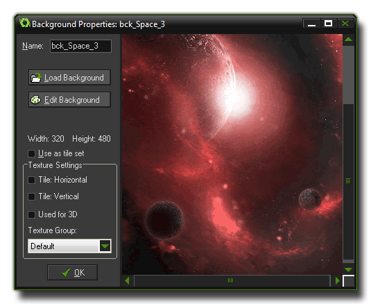
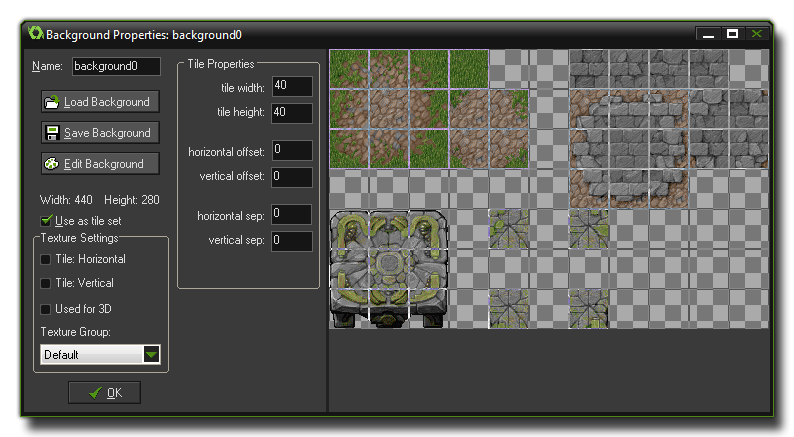

通常用大图像作为房间的背景。但它们也可以是由许多名为 tiles (磁贴) 的小图像组成，它们只需要更小的开销。你会得到比物体和精灵更复杂的视觉设计。
用 Resources 下拉菜单的 Create Background 选项或者工具栏上相应的按钮创建背景。无论以哪种方式都将打开下面的窗口:  如同所有的资源，你必须为 backgrounds 取一个名字使得 GameMaker: Studio 和你可以轻松地辨认它们,实际上你需要知道在这种情况下真实的名字只是一个包含了大量的 "点" 的变量资源。最好给背景一个描述性的名称以便你可以一目了然地区分它和其他类型的资源，许多人通过添加 "bck" 前缀或后缀来区分。例如，上图可以叫做 bck_Horizon 或者 Horizon_bck。
名字下面的部分是加载、保存和编辑背景图片。如果你选择 "Load Background (加载背景)"，会打开标准的文件选择器以选择支持的图像 (PNG、GIF、BMP、JPG)。在这里你还可以选择不透明 (去除任何透明部分)、去除背景色 (如果有使其透明)或者平滑边缘(如果它是透明的)。选好了这些选项按下 Open 按钮把背景载入 GameMaker: Studio。背景编辑可以在 GameMaker: Studio 内完成。进一步的信息请点击 这里。
谨慎使用大背景，特别是如果你想制作HTML5或较小的设备的时候，大背景会需要更多的内存，当你编译游戏的时候可能会出现问题。你应该知道 GameMaker: Studio 里的背景是为了磁贴设计的，这意味着它们的两边有重复的像素，所以如果你看到了奇怪的东西 (透明线、额外的像素等等) 尽可能使用精灵替代这些图形效果以达到目的。
GameMaker: Studio 内置了强大的图像编辑器，尽管并不是万能的。关于如何使用它，请查看 More About Sprites: Editing Subimages (更多关于精灵: 编辑子图像) 章节。
Sometimes you want to have a background image broken up into a set of tiles, which basically means, one large image composed of different sub images that can all be linked together. 有时候你想要把背景分解成一系列磁贴，这意味着，一个大的图像可以由小图像组合在一起。当创建房间时你可以添加这些子图像来做出很棒的关卡而不需要占用大量系统资源来绘制图像。要注意磁贴是 纯粹的图像 而没有更多的属性所以它们能够被快速处理。要使用磁贴，勾选 Use as tile set ，背景窗口就会变成下面这样:  你可以设置磁贴的宽度和高度。如果有不同的尺寸，创建两套或更多磁贴。你也可以设置左方和上方的偏移量 (像素为单位) 以及磁贴之间的分离量 (像素为单位)。更多关于磁贴的使用请查阅本手册的高级部分 更多关于背景，如何在房间编辑器编辑器使用磁贴请查阅 更多关于房间。
| Converted from CHM to HTML with chm2web Pro 2.85 (unicode) |